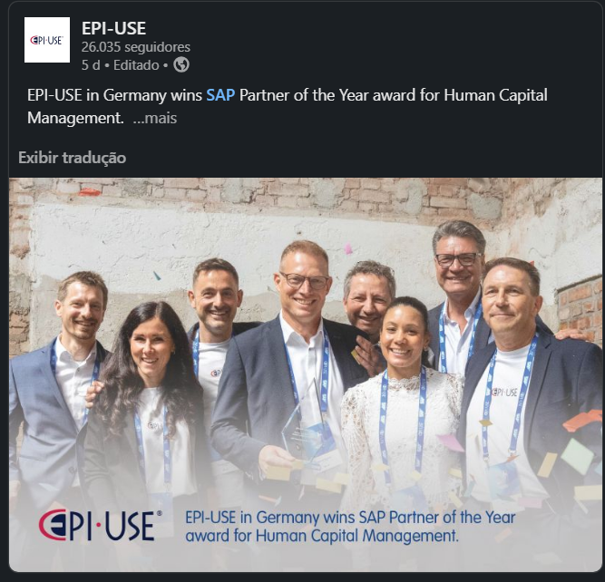
Coletamos 90+ posts da matriz EPI-USE e dos países (BR, DACH, USA, UK, AU, ZA…). O resultado: nenhum padrão de marca consistente, identidade visual fragmentada, e oportunidade clara de unificar sem matar a personalidade local.
Cinco padrões coexistem no mesmo feed: institucional cinza-vermelho, evento azul-fotográfico, case com script handwritten, kickoff varsity azul-amarelo e artigos com blocos de texto pesados. Nada conversa.

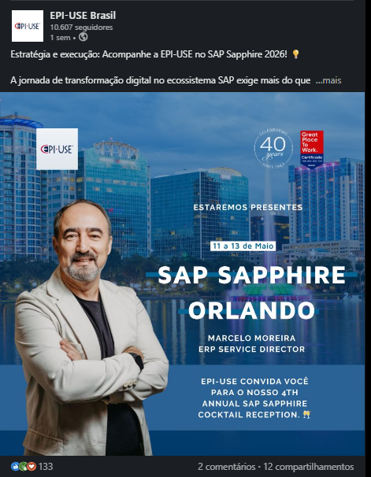
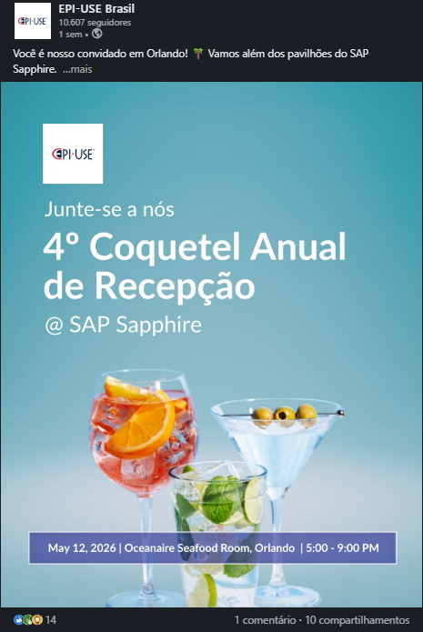
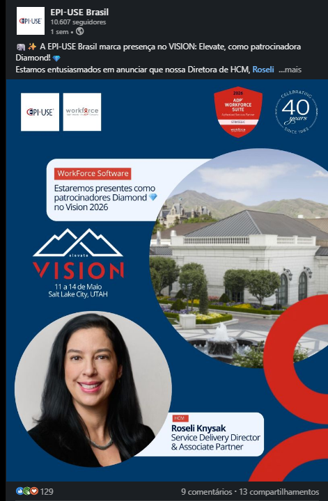
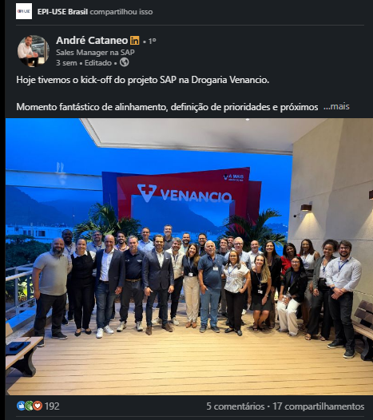
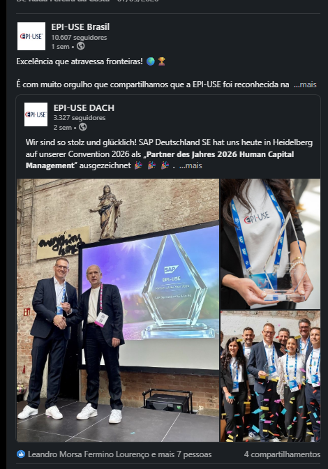
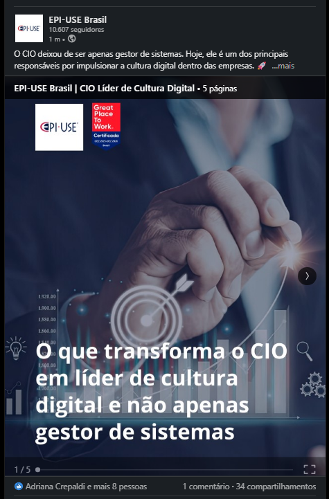
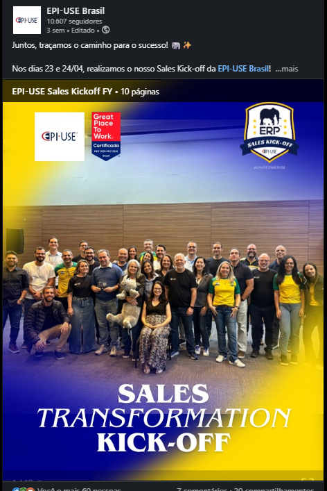
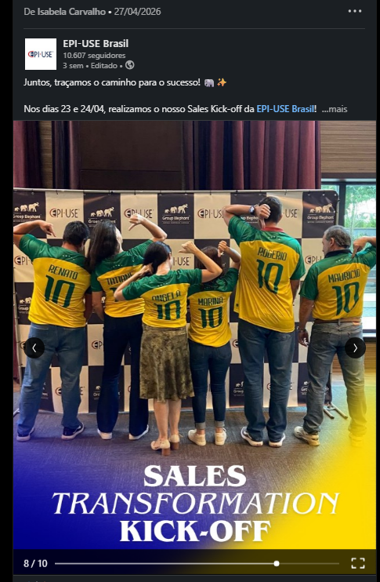
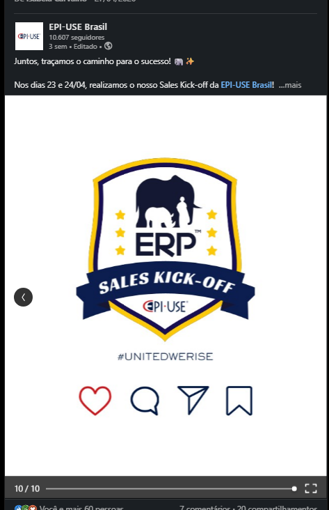
Análise de likes nos posts da @EPI-USE Brasil no LinkedIn. Posts compartilhados por pessoas reais (não só pela página) tiveram 2,4× mais engajamento que carrosséis institucionais com bloco de texto.
Quando você abre o feed da EPI-USE em qualquer país, ou é uma dessas sete coisas — ou está faltando contexto pra existir. Mapeamos por tipo e definimos o que funciona em cada.
Cada tipo tem template próprio, KPI esperado e tom de copy. Categoria errada → engajamento errado.
Cliente real + produto + número. Foto humana sempre que possível. Compartilhar pelo perfil do gerente que tocou o projeto.
"Estaremos presentes" + cidade + executivo + parceiro. Convite separado em peça leve.
Foto do time celebrando. Barra inferior com título do prêmio. Pouca firula.
Compartilhar do perfil do líder do projeto. Foto de grupo > arte. Marca cliente em destaque.
Número herói + headline curta + ícone temático. CTA no último slide. Padrão SuccessFactors.
9:16 e 1:1. Depoimento, milestone, behind-the-scenes. Legenda burned-in obrigatória.
Cultura, GPTW, 40 anos, propósito. Sempre paleta institucional, sem campanha.
Institucional é o default. Campanha (United We Rise hoje, outras amanhã) é a exceção — só roda quando a matriz libera. A mesma elephant, dois figurinos.
A matriz mantém o vermelho EPI-USE como âncora institucional. Campanhas internas podem subverter a paleta — mas sempre voltam pro vermelho no fechamento.
Esse é o padrão. Inspirado no carrossel da SAP SuccessFactors — um dos mais performáticos do ecossistema SAP. Aplicável a todos os LOBs com paleta de acento por produto.
Cinco elementos por slide, nada mais. Se não couberem confortavelmente, o conteúdo está errado — não o template. Quebre em mais slides.
Topo do slide. Verbo de ação + objeto. Bold no termo-chave. Sem ponto final. "Make AI training practical"
É o protagonista visual. Sempre maior que qualquer outro elemento. Cor da paleta de acento do LOB.
O "o quê" do número. Máximo de 8 palavras. Fundo escuro pra contrastar com o número.
Reforça o tema do slide. Mesma família visual em todos os slides do carrossel.
Conta a história: 1/5, 2/5… Sinaliza progresso e convida o swipe.
Inspirado no padrão SAP Cloud ERP (GROW). O último slide pega o swipe e converte em ação — sempre com tag-line de produto e selo EPI-USE.
Verbo de ação. Pode usar pergunta ("Vamos juntos?") ou afirmação ("Bring it with EPI-USE"). Italic serif num termo-chave puxa o olho.
O posicionamento curto do LOB. Sempre com o ícone-bullet (diamante, triângulo, traço) na paleta de acento.
Logo vermelho + "Parceiro certificado SAP" + URL. Aqui é o único elemento que NÃO muda entre LOBs — é a âncora de marca.
Roxo (BTP), Azul deep (GROW), Lavanda (HCM), Teal (Signavio). Mantém continuidade visual do carrossel.
A análise mostrou que vídeo curto (Signavio, HCM milestones) já cresce mais que carrossel. Três formatos padrão, mesma identidade.
Quando usar: Depoimento curto (15-30s), behind-the-scenes, milestone celebratório, dica rápida de consultor.
Obrigatório: legenda burned-in · lower-third com nome+cargo · logo EPI-USE no canto · 3s de hook na abertura.
Quando usar: Recap de evento, anúncio de kickoff/go-live, comemoração de equipe, montagem de cases.
Obrigatório: abertura com card "X SEGUNDOS COM…" · fechamento sempre com logo EPI-USE + tag-line do LOB.
Quando usar: Entrevista de executivo, painel de evento (Sapphire, VISION), webinar de produto, demo guiada.
Obrigatório: abertura com selo de evento · lower-third persistente no canto · capítulos por tema · CTA final.
Os carrosséis de artigo (Datasphere, CIO Líder) viraram blocos de texto sobre stock-photos. O reaprendizado é simples: o slide é um cartaz, não um post de blog.
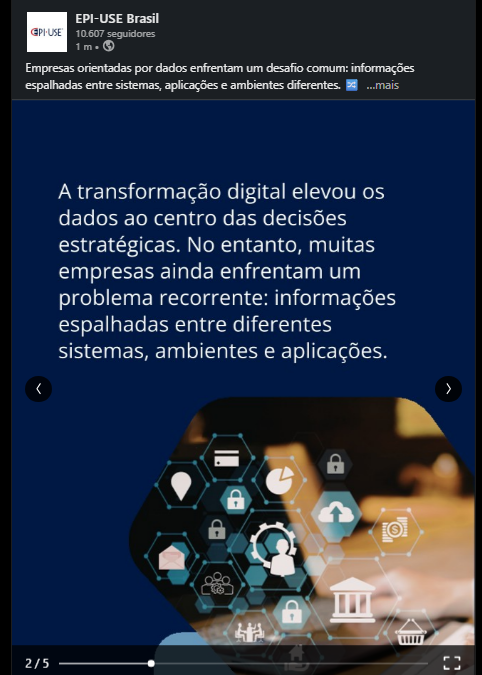
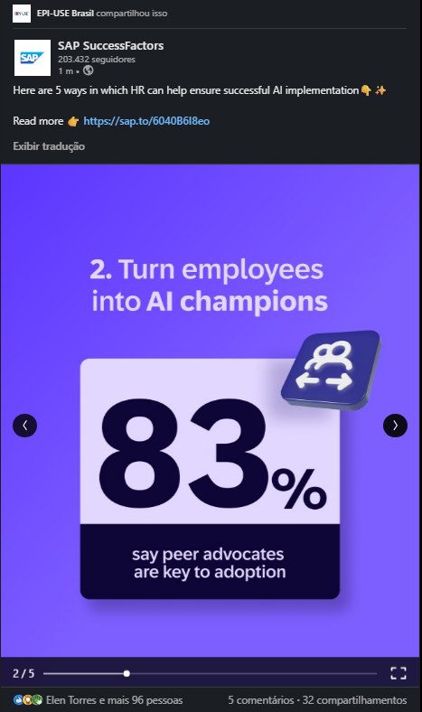